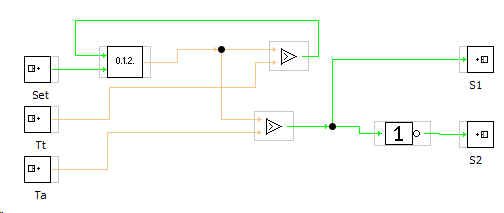
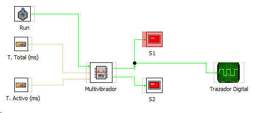

Este bloque es capaz de generar una señal digital en la que podemos controlar el tiempo de la señal en estado activo y desactivo.
Las entradas que comntrolan el bloque son:
Set: Activa el funcionamiento habilitando los valores de entrada temporal.
Tt: Tiempo total de duracion del ciclo.
Ta: Tiempo en el que la señal permanecerá en alto
Las salidas son:
S1: Salida normal
S2: Salida negada.
Contenido del bloque:

Ejemplo de utilización
